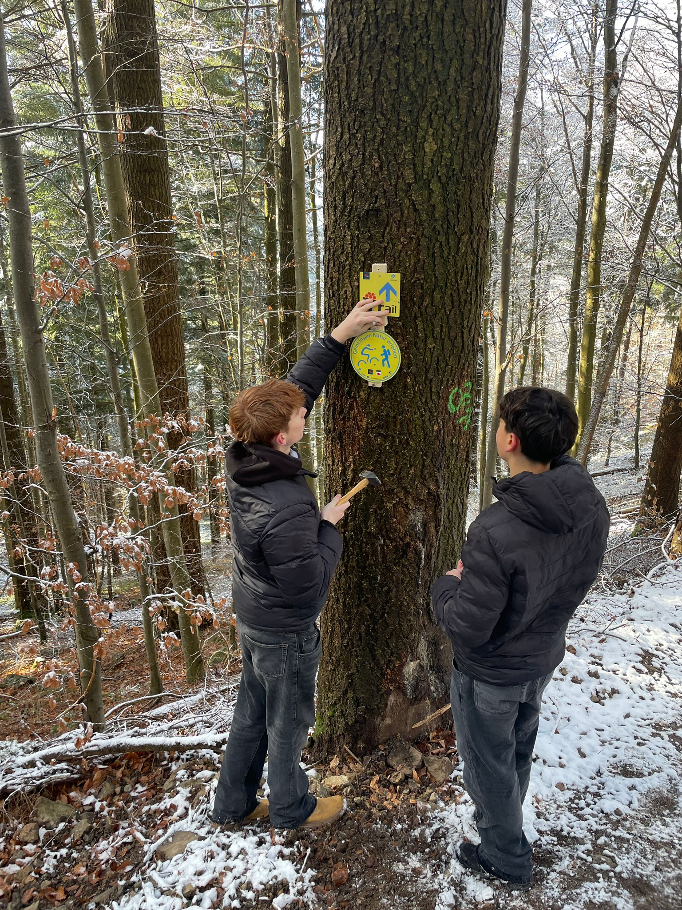

Mountainbike
Bei unserem Projekt „Lernen durch Engagement“ haben wir: Moritz, Anel und Nicolas, beim Mountainbike Verein Freiburg mitgeholfen. Auf einem Trail haben ein paar wichtige Schilder gefehlt, und wir sollten sie bauen und später aufhängen. Beim ersten Termin haben wir die Schilder zusammen vorbereitet und alles ausgemessen und zusammengeschraubt. Beim zweiten Termin sind wir dann raus auf den Trail und haben sie dort befestigt. Die Leute vom Verein haben sich richtig gefreut, dass wir das machen, und man hat gemerkt, dass es denen wirklich geholfen hat. Uns selbst hat es auch voll Spaß gemacht, weil wir draußen waren und etwas gemacht haben, das man am Ende wirklich sieht. Insgesamt war es eine coole Erfahrung, die wir sofort wieder machen würden.

0:00 /
0:00
CAPOA
CAPOA Freiburg e.V. ist ein gemeinnütziger Verein, der sich für Menschen mit Migrations- und Fluchterfahrung einsetzt, besonders für junge Menschen. Der Verein unterstützt sie dabei, sich in Deutschland besser zurechtzufinden und am gesellschaftlichen Leben teilzunehmen. Dazu gehört persönliche Beratung bei Alltagsproblemen, Hilfe bei Fragen zu Arbeit, Ausbildung und Zukunft sowie soziale Begleitung. CAPOA möchte Menschen stärken, ihr Selbstvertrauen fördern und ihnen zeigen, dass ihre Fähigkeiten und ihre Kultur wertvoll sind. Ein wichtiger Teil der Arbeit ist die direkte aufsuchende Sozialarbeit am Stühlinger Kirchplatz. Dort sprechen Mitarbeitende und Streetworker junge Menschen an, hören zu, vermitteln bei Konflikten und helfen bei akuten Problemen. Gleichzeitig fördert CAPOA die Begegnung zwischen verschiedenen Kulturen durch kulturelle Veranstaltungen, Sportangebote und Bildungsprojekte. Der Verein arbeitet eng mit anderen Organisationen und der Stadt Freiburg zusammen und wird durch Kooperationen, Förderungen und Spenden unterstützt. Insgesamt trägt CAPOA Freiburg e.V. dazu bei, Integration zu fördern, Gemeinschaft zu stärken und ein respektvolles Zusammenleben in Freiburg zu ermöglichen.
Inklusion
Im Rahmen des Projekts „Lernen durch Engagement“ haben wir uns mit dem Thema Inklusion beschäftigt. Uns war wichtig, Inklusion nicht nur im Unterricht zu besprechen, sondern sie im Alltag selbst zu erleben. Deshalb haben wir uns in der Inklusionsklasse unserer Schule sowie bei der Lebenshilfe Tübingen engagiert. In der Inklusionsklasse unterstützten wir Schülerinnen und Schüler mit besonderem Förderbedarf im Schulalltag. Wir halfen bei praktischen Aufgaben, begleiteten einzelne Kinder bei ihrer Arbeit und verbrachten Pausen gemeinsam. Dabei haben wir gemerkt, wie wichtig Geduld, klare Anweisungen und eine positive Atmosphäre sind, damit alle gut mitmachen können. Ein weiterer Teil unseres Projekts fand bei der Lebenshilfe Tübingen statt. Dort nahmen wir an einem Ausflug auf einen Bauernhof teil. Kinder und Jugendliche mit und ohne Behinderung verbrachten gemeinsam einen Tag auf dem Hof. Wir halfen bei der Tierpflege, beim Vorbereiten des Mittagessens und bei verschiedenen Freizeitaktivitäten. Besonders schön war zu sehen, wie selbstverständlich das Miteinander funktionierte, wenn alle Aufgaben gut angepasst waren. Außerdem unterstützten wir ein Training einer inklusiven Tischtennisgruppe, die erst einige Wochen zuvor gegründet wurde. Durch unser Projekt haben wir gelernt, Verantwortung zu übernehmen, geduldiger zu sein und auf unterschiedliche Menschen einzugehen. Vor allem haben wir gemerkt, dass Inklusion keine Theorie ist, sondern im Alltag stattfindet und dass gemeinsames Lernen und Arbeiten für alle eine Bereicherung sein sollte.
Strandcafe Freiburg
Im Strandcafe Freiburg wird jeden Donnerstag und Freitag ein ehrenamtliches Angebot, namens Foodsharing-Cafe veranstaltet. Bei diesenm handelt es sich um ein ehrenamtliches Angebot bei dem kostenlos gerettets Essen ausgegeben wird. Dies bietet die Möglichkeit das Retten von Lebensmittelen mit dem Helfen von Beduerftigen zu verbinden. Ehrenamtliche Helfer werden immer benötigt. Das Problem Lebensmittelverschwendung: Weltweit werden 40 % der produzierten Lebensmittel verschwendet. Das bedeutet, dass Lebensmittel, welche für den menschlichen Verzehr bestimmt sind, in der Tonne landen. Lebensmittelverschwendung ist ein großes Problem, da 10 % aller Treibhausgasemissionen und 25 % des jährlich verbrauchten Süßwassers weltweit durch Lebensmittelverschwendung verursacht werden. Während 2,4 Milliarden Menschen keinen Zugang zu einer ausreichenden und nahrhaften Nahrung haben und 9 Millionen Menschen jährlich verhungern, wird ein Großteil der essbaren Lebensmittel bei uns einfach weggeschmissen. Dadurch geht Essen im Wert von 1.1 Billioen US-Dollar verloren. Das zweite Ziel der UN Sustainable Development Goals ist „Kein Hunger“. Um dieses zu erreichen, muss die Verschwendung von Lebensmitteln massiv eingeschränkt werden. Dafür gibt es unter anderem Projekte wie das Foodsharing-Café, die probieren, einen positiven Einfluss zu haben. Doch wie effektiv sind solche Projekte, um das Gesamtproblem zu lösen? Das Ziel der Organisation ist es, Lebensmittel zu retten, zum Beispiel aus Schulen, die kurz vor dem Mindesthaltbarkeitsdatum stehen oder dieses leicht überschritten haben, oder Lebensmittel, die nicht mehr verkauft werden können, wie etwa zu hartes Brot und sie kostenlos an alle zu verteilen, die sie benötigen. Einer der Leiter der Organisation kann uns aus rechtlichen Gründen nicht genau erzählen, woher das gerettete Essen kommt.
Demokratie Leben
Am Anfang des Projekts „Lernen durch Engagement“ haben wir nach einer Organisation gesucht, bei der wir uns ehrenamtlich engagieren können. Schließlich haben wir eine Zusage von der Organisation „Demokratie leben!“ in Freiburg erhalten. Unser Ziel bei diesem Projekt war es, Menschen über Demokratie aufzuklären und ein Zeichen gegen rechtsextreme Parolen zu setzen. Dafür haben wir Leitfäden in der Stadt verteilt und sind aktiv auf Menschen zugegangen. Dabei ist uns aufgefallen, dass vor allem ältere Menschen und Studierende offen für das Thema waren und interessiert zugehört haben. Insgesamt fanden wir das Projekt sehr gut, da es uns gezeigt hat, wie wichtig Engagement für Demokratie ist und weil wir dabei viel über den Umgang mit Menschen gelernt haben.
Spendenaktion Sportkleidung
Als das Projekt „Lernen durch Engagement“ vorgestellt wurde, hatten wir (Jona Batteux und Noah Ernst) die Idee, dass wir dieses Projekt mit unserer Leidenschaft Fußball verbinden. Da wir beide Trainer und Spieler des Fußballvereins VfR Merzhausen sind, organisierten wir eine Spendenaktion von Sportkleidung. Wir spenden die gesammelte Kleidung an den Kleiderladen in Freiburg, bei dem Menschen vorbeikommen können, die nicht genügend Geld haben sich anderweitig Kleidung zu kaufen. Mit unserem Projekt hatten wir verschiedene Ziele. Zum einen wollten wir ein nachhaltiges Projekt haben, das umweltfreundlich ist. Zudem ist uns aufgefallen, dass in Kleiderläden für ärmere Menschen nur saisonale Straßenkleidung vorhanden ist und meist keine Sportkleidung. Deshalb war es unser Ziel, in dem Kleiderladen, an den wir spenden, auch ein kleines Angebot von Sportkleidung zu ermöglichen.

0:00 /
0:00